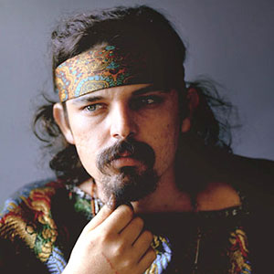

Ron "PigPen" Mckernan

Ron Mckernan, or “PigPen” as his friends would call him, played on keys and harmonica, with accompanying blues vocals, percussion, and guitar. After hanging around coffeehouses and music stores, he eventually met Jerry Garcia, and one night Garcia had McKernan hop on stage and play his harmonica and sing the blues. Starting a rock band was actually his idea, and with his urge for the Warlocks to go electric, and the addition of bass player Phil Lesh, the Grateful Dead was born. He was a high-energy bluesman, his nickname stemming from his funky approach to life and sanitation. It was his life, however that began to catch up with him and by the early 70’s he died of internal hemorrhaging caused by his drinking.